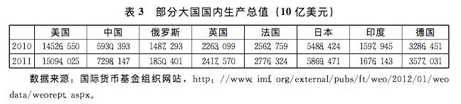
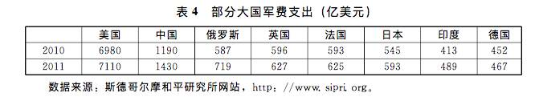

收录于合集
简
袁伟华
天津工业大学马克思主义学院／文化战略与社会发展研究中心副教授；
田光强
中国社会科学院亚太与全球战略研究院助理研究员
★
内容摘要： 联盟是一国通过外部方式增加权力，服务于自身战略目标的重要手段之一。主导国建构联盟体系旨在维持其主导地位。由于国际关系中 的权力格局始终处于变动之中，当主导国战略目标不变，相对权力变化有利于主导国时，其对于盟友的战略依赖下降。此时，主导国推动联盟转型以强化对于盟友的控制，盟友的自主性更受制约，主导国或者是将盟友地位矮化、联盟功能简化，甚至解散联盟。当相对权力变化不利于主导国时，联盟对于主导国的价值提升，主导国对于盟友的战略依赖加深。此时，主导国更可能提升盟友地位、强化联盟承诺、扩大联盟的职能。冷战结束之后，美日联盟经历了可能瓦解的危机。文章以冷战后美日联盟转型为例，探讨了美日联盟经历的三次大的转型。在当前的美日联盟中，解禁集体自卫权是美国给予日本一定自主权的重要标志，联盟的安全与防卫合作在空间上扩大至全球范围，在时间上覆盖了和平与战时的全过程。但是，美日联盟转型弱化了美国对于日本的控制，增加了美国卷入地区冲突的风险。
关键词： 权力转移 结构压力 战略依赖 联盟转型 美日联盟
★
接上文《权力转移、战略依赖与联盟转型——以冷战后美日联盟转型为例》。
三、冷战后美日联盟的转型
二战结束之后，出于与苏联争霸的需要，美国在欧洲建立了北约多边联盟体系，在亚洲建立了“轴辐结构”的联盟体系。在亚洲的“轴辐结构”联盟体系保证了美国的单一轴心，以一系列双边同盟建构起美国领导的在亚太地区遏制苏联的安全体系，同时亚太盟国之间却缺乏安全合作。美国希望依托这一架构，既可以较大程度地控制盟友，防止卷入因盟友的战略失误而导致与中、苏等国的全面冲突之中；又可以遏制该地区共产主义力量的蔓延，与苏联争夺世界霸权。1951年9月美日签署了《美日安保条约》，两国正式从二战的对手变成了冷战期间的盟友。随着冷战期间国际局势的发展，美日同盟经过了一系列变化和调整。 尤其是冷战结束之后，美日同盟进行了三次重要的调整。
(一)冷战结束与美日联盟转型
二十世纪八十年代后期，由于苏联的相对衰落以及美苏关系的缓和，美日的安全形势大为缓和。苏联解体之后，国际权力结构迅速朝着有利于美国的方向发展。美国的战略家认为，冷战结束之后的世界是一个单极世界，美国在单极世界中居于主导地位。由于当前权力前所未有地集中于美国，所以其他国家可能具有一种预期———抗衡美国不仅代价高昂而且风险很高。对于美国而言，处在这样一个单极时代，盟国并非不可或缺。对于日本而言，冷战期间美国的长期压制也激发了国内的民族主义。 **盛田昭夫和石原慎太郎 1989年出版的《日本可以说“不”》畅销国内，迎合了日本泛起的民族主义情绪。**日本追求政治大国的战略目标，“积极参与国际事务，创造新的国际秩序，以确保自身的安全与繁荣。日本外交政策必须发展，尽可能快地从小国型向大国型外交转型”。与美国的看法不同，日本认为美国正在衰落，这不是美国上升的时期，而是美国下降的时期。日美长期居高不下的贸易不平衡加剧了两国关系的恶化，日本也一改长期屈服于美国的传统做法。如1994年2月，日本拒绝美国关于确定日本从美国进口产品的数值指标的要求。 这是日本政府第一次对美国说“不”。当时美国有一种战略担忧，日本可能领导亚洲国家排挤美国。美日联盟一度陷入困境，面临瓦解之险。
冷战后亚太地区国际形势的发展促使美国重新思考美日联盟的价值。1993年5月，朝鲜发射的一枚新改良的“劳动-I”型弹道导弹落入日本海，该导弹射程可以覆盖日本全境。美日迅速对朝鲜半岛局势表示关注，积极推动联合国安理会对朝鲜进行制裁。与此同时，台海局势也不乐观。1995年5月，李登辉借回康奈尔大学之机，以私人身份访问美国。中国政府与美国进行严正交涉的同时，在东南沿海进行军事演习彰显中国政府的决心。1996年春，面对台湾地区领导人选举中波谲云诡的局势，为了震慑“台独”势力，中国政府又在台湾海峡进行了导弹演习。美国则派遣两个航空母舰战斗群先后进入该地区，从而造成了一场“台海危机”。美国介入危机的意图是维护亚太盟国对美国军事承诺可靠性的信心。 朝鲜半岛危机和台海局势的发展，让美国重新发现了日本的战略价值。
冷战结束之后，美国的安全战略在观念上出现了一些改变，由冷战时的争夺霸权转变为维持霸权。具体表现为：由冷战时应付明确的目标转向应付多样化的威胁和潜在对手，在世界总体局势缓和，热点问题、热点地区(如朝鲜半岛等)向着良性循环方向发展的情况下，美国的联盟职能更强调预防性。冷战结束之后，欧洲形势并不太平，巴尔干地区危机愈演愈烈，美国依然需要将主要战略力量留在欧洲，保证该地区的稳定。于是在亚太地区，美国依然需要既有盟友的大力支持。1995年2月，美国国防部发布了《东亚安全战略报告》。这份报告指出，无论是对美国的太平洋安全政策，还是对美国的全球战略目标而言，美日关系都是根本性的。美日联盟是美国亚洲安全政策的基石，不能因为贸易摩擦损害美日安全联盟。1997年，美国助理国防部长科特·坎贝尔(Kurt Campbel)指出了美国面对的主要安全威胁：朝鲜的不稳定性；中俄关系；中国军事力量的发展；台海两岸关系的不稳定性；东南亚国家日益增长的军事支出等。 在美国的战略评估中，美日联盟是应对新威胁的重要途径。
为了改善双边关系，美日加紧解决分歧，协商新的合作模式。1995年11月，美国国防部长威廉·佩里(Wiliam Pery)访问日本，并与日本政府商议设立冲绳特别行动委员会，协商解决美军基地问题。经过美日共同努力，就长期困扰两国关系的普天间机场问题达成协议。在1996年台海危机后不久的4月16日，美国总统克林顿访问日本。在这次访问中，美日双方发表了《美日联合安全宣言：面向21世纪的联盟》。这份宣言指出，两国重申美日联盟的重要价值，再次确认美日安全关系建立在《美日安全保障条约》之上，这依然是保证实现共同安全目标的基石，也能继续成为21世纪亚太地区维护安定和繁荣的基础。美日双方一致同意对1978年的《美日防卫合作指针》进行修订。此外，双方共同确立了美日关系的三大支柱：安全、政治和经济。
经过一年多的磋商，1997年9月，新版《美日防卫合作指针》(以下简称《指针》)出台。 新《指针》就美日联盟的适用范围做了新的诠释，区分了三种不同的状况：(1)平时的合作：双方加强信息共享和政策咨询、各种类型的安全合作、双边合作计划；(2)在日本遭到军事进攻时的合作：区分了日本遭遇的军事进攻迫在眉睫、发生对日本进攻危机时的双方合作计划；(3)在日本周边发生不测事态时的合作：日本为美军提供设施便利、后方支持等。为了在《指针》引导下有效开展双边合作，美日双方在平时、日本遭遇军事进攻时、日本周边有不测事态时的所有安全环境下开展合作对话。
综合来看，1997年的《指针》对于美日联盟做出了新的突破。 第一， 美日联盟一改之前“专守防卫”的界限，提出了合作扩展到所谓日本“周边事态”的新概念。尽管美日否认周边事态是地理的、而是事态性质的概念，但是日本自卫队自此可以突破日本本岛，卷入地区冲突。 第二， 制定美日在日本领土外协同作战的方案，赋予日本自卫队前所未有的功能，如情报交换、政策协调以及抑制事态进一步扩大的外交努力。在出现“周边事态”时，美军在前方负责主攻，日本自卫队则在后勤方面提供帮助，包括在公海为美军扫雷、巡逻、搜集情报等。 第三， 强化联盟之间平时的合作机制，两国将视需要共同推进亚太地区安全对话、实行国际军备管理和裁军、参加联合国维和行动或救灾、实施人道主义救援活动等。因此，两国防务合作不仅仅是防御性的，而且也包含了双方在国际事务中的外交协调，提升了联盟的价值。
冷战结束之初的美日联盟曾陷入困境。一是苏联的解体令美国失去了战略目标，美国放弃传统的争霸战略引起了日本之于美国战略价值的大讨论和怀疑；二是美日关系中的贸易摩擦困扰着美日联盟；三是日本国内民族主义的兴起影响了美日关系。然而，随着国际形势的变化，美国维持霸权战略的确定，使得美日联盟从可有可无的地位，提升为美国维持在亚太地区霸权的重要战略支撑，导致美国自1997年起积极推动美日联盟转型：从战略目标来看，美日联盟从专事防御转向了“地区主导型”联盟；从战略区域来看，从专守日本本土转向了介入日本及周边地区；从联盟关系角度看，一定程度上提升了日本在联盟中的地位，给予日本较大的战略自主性。
(二)反恐战争与美日联盟转型
**1997年的美日联盟转型并没有解决美日之间内在的经济矛盾和在日美军 基地等问题。**在1997年东南亚金融危机中，由于日元贬值加剧了东南亚危机的蔓延，而中国坚持人民币不贬值承担了更大的国际责任。在这种情况下，美国官方和民间舆论对于日本政府缺乏担当、没有承担起世界第二大经济体应有的国际责任非常不满。美国国会和媒体都在追问“日本在哪里?”与此同时，经历了1996年台海危机的中美关系在1997年迎来转机，尤其是1998年克林顿总统访华，意味着中美关系极大的改善。美日关系的恶化和中美关系的改善，引起了日本和美国知日派的担忧和不满。2000年10月，一份由理查德·阿米蒂奇(Richard Armitage)和约瑟夫·奈(Joseph Nye)负责撰写的报告发表，即《美国与日本：走向成熟的伙伴关系》(U.S. and Japan：Towarda Mature Partnership)(也称第一份《阿米蒂奇报告》)。该报告指出，在后冷战时代，亚洲具备良好的前景但是又具有潜在危险，因而美日双边关系比过去任何时候都更重要。日本是美国介入亚洲的重要基础，是美国全球安全战略的中心环节，是地区秩序的基础。美日双方应该修改防卫指针，扩大日本在联盟中的作用。
2001年1月，乔治·W.布什(George W. Bush)就职美国总统，新保守主义深刻地影响着小布什政府的内政外交。新保守主义坚信，美国依然是唯一的超级大国。但是大国之间的国际竞争再次回归，俄罗斯、中国、欧洲、日本、印度、伊朗、美国和其他地区大国，对于世界地位和影响力的竞争再次成为国际舞台的重要特征。正当小布什总统准备在大国竞争中大展身手之际，2001年9月11日，恐怖分子袭击美国，造成了巨大的人员伤亡。依据传统观点，处于国际权力结构顶端的美国本应享有最大的安全，但“九一一事件”彻底打破了美国坚不可摧的神话。美国与恐怖主义组织的实力显然处于不对称状态，恐怖主义组织隐藏不露，恐怖分子飘忽不定，令军事实力强大的美国无从下手。为最大程度地打击恐怖主义，美国亟欲改善与盟友乃至其他国家的关系，以进行反恐国际合作。至此， 美国的战略再次调整，将恐怖主义和大规模杀伤性武器的扩散视为国家安全的最大威胁。 美国认为，其主要威胁来自于贯穿加勒比海沿岸、非洲、高加索、中亚、中东、南亚和朝鲜半岛的“不稳定弧形区”(arcofinstability)。围绕这一战略，美国加大调整海外兵力部署，强化快速反应理念。就亚洲而言，日本成为美国亚太驻军的指挥中心和后勤支援中心。
“九一一事件”加速了美日联盟关系的推进。 在“九一一事件”发生之前的6月30日，日本首相小泉纯一郎访美之际，两国发表了题为《为了安全与繁荣的伙伴关系》的联合公报，重申美日联盟是亚太地区和平与稳定的基石。“九一一事件”发生之后，日本政府迅速采取措施表达对美国的支持，坚定地支持美国的反恐战争，不再坚持自卫队不能被派往危险区域的立场。为此，日本政府向议会提出法案，要求赋予自卫队为美军提供非战斗支持，保护美国在日本的军事设施。2002年12月，两国达成一致，加强关于弹道导弹防御的咨询与合作。在美国发动的阿富汗战争中，日本积极予以美国军事支持。在2003年爆发的伊拉克战争中，日本也是美国盟友中为数不多的坚定地支持美国军事行动的国家。2004年2月，日本政府将550名全副武装的陆上自卫队队员派往伊拉克战区，这是日本应美国要求首次向战争地区派兵，也是第二次世界大战结束以来日本在海外派兵问题上的重大突破，标志着美日联盟关系的重大突破。
由于反恐战争的需要，美国加紧推进改善与日本的联盟关系。这与日本积极推进大国战略目标，需要改善与美国关系的诉求不谋而合。2005年10月29日，由美国国务卿、国防部长与日本外务大臣、防卫厅长官参加的“2+2”会议，推出了《美日联盟：面向未来的转型和改组》文件。这份文件对美日联盟进行了“再定义”，联盟关系被定位为“应对全球性挑战”，强调为实现地区和全球的共同战略目标而紧密合作，并列出了合作的主要领域：保卫日本和对日本的周边事态做出反应，包括对新型威胁和各种事态做出反应；努力改善国际安全环境，如参与国际和平合作活动。为应对多样化的威胁，美日采取以下关键措施以加强双边安全与防务合作：(1)紧密和持续的政策与行为协调；(2)促进双边紧急措施计划；(3)提高信息分享与情报合作水平；(4)促进互通性；(5)扩展在美国和日本的训练机会；(6)美军与自卫队共用设施；(7)弹道导弹防御合作。文件重申，“美国在亚太地区的驻军是地区和平和安全不可或缺的核心力量，对美日两国都是至关重要的。日本为美军提供必要和补充的力量”。
2006年6月底，日本首相小泉纯一郎访美，双方在29日发表了《新世纪的美日联盟》的联合声明。声明高调表示美日联盟已经取得的扩展和提升，预示着美日联盟将在21世纪进入一个新的全球合作时代。声明强调美日联盟建立在普世价值和共同的利益基础之上。美日团结不仅应对针对彼此的威胁，而且促进诸如自由、人的尊严和人权、民主、市场经济和法治等核心的普世价值。这些价值根植于两国长期的历史传统。着眼未来，双方应加强在政治、安全和经济领域的合作。至此，美日联盟第二次转型告一段落。
此次美日联盟的转型具有三个方面的突破。第一， 从空间来说，转型后的美日联盟从日本“周边事态”扩展至全球安全。第二次调整不仅落实了1997年的《指针》，而且实际上超越了《指针》规定的范围。美日联盟已为应对全球性安全威胁做出了安排。 第二， 从联盟攻防性来说，转型后的美日联盟加强了进攻性。1997年的《指针》针对具体事态，但在2005年已经修改为主导亚太安全的基本框架，联盟的进攻性和干预性更加明显。在亚太地区，美日联盟的战略目标包括：日本的安全、朝鲜半岛的和平统一、朝鲜核问题、台湾问题、中国军事力量和俄日关系等。 第三， 从联盟的合作来看，转型后的美日联盟强化了合作反应机制。双方的军事合作更加密切。总之，在小布什政府第一任期内，美日两国的政治互信和安全合作都达到了前所未有的高度。
(三)“亚太再平衡”战略与美日联盟转型
美日联盟第二次转型并没有消弭美日之间固有的矛盾。2006年之后，围绕普天间机场的搬迁问题，美日之间爆发了激烈的争论。两国政界和舆论的对立情绪浓厚。2009年9月日本国内政局出现变化，在竞选中承诺要把普天间机场迁到县外或国外的鸠山由纪夫出任首相。鸠山由纪夫试图兑现竞选承诺，却遭到美国政府的坚决反对。10月21日，美国国防部长罗伯特·盖茨(Robert Gates)在离开东京时不无威胁地说，如果现有的基地转移协议无法实施，重新部署美军的所有计划都将无效。次日，美国参谋长联席会议主席也在美国驻东京大使馆的记者招待会上表示，如果现行方案无法实施，日本以及亚太地区的安全将难以得到充分保障。在美国的压力之下，加之面对朝鲜核问题和中国崛起的压力，日本被迫做出让步，鸠山由纪夫也宣布辞职。
美国之所以迫使日本接受其安排，主要在于美国的战略调整需要日本在亚太地区发挥支柱作用。 一直以来，日本对于美国的亚太战略乃至全球战略有着突出而重大的意义，美国通过扼制和鼓励的方式，有效地将日本的力量整合到自己的全球战略中。冷战结束之后，遏制中国一度成为美国战略转向的重点议题之一，但是巴尔干地区的冲突延缓了这一进程。在欧洲战事稍事平息后，又发生了“九一一事件”，再次推迟了美国的战略重心转移至亚太地区。在经历了十年的反恐战争之后，美国已经取得了阶段性胜利。在这种背景之下，时任美国总统奥巴马势必做出一定的战略调整。此时，中国快速崛起，在世界诸大国中表现突出。如表3所示，2010年中国国内生产总值已经超越日本，跃居世界二位。在军事方面，由于西方国家对于中国军费开支持续增长表示担忧，在他们的计算中，中国的军事支出往往会被夸大2~3倍。如表4所示，在2011年，斯德哥尔摩和平研究所的军事支出数据中，中国军费支出位于世界第二位，超过亚洲第二位的日本800多亿美元。
 
尽管中美之间在国内生产总值上差距较大，但是一些学者指出中国经济增速较快，可能在不远的将来会超越美国。有学者预测，依据当前的发展轨迹，中国的国内生产总值将在2030~2040年期间赶上或超过美国。中国经济的快速增长引起了美国战略界的普遍担忧，当前美国对华政策辩论越来越沿着对华不信任的方向蔓延，实际政策调整也在朝着挤撞趋势发展。美国政治家也担忧失去对世界的主导地位。201年1月，奥巴马政府正式提出了“亚太再平衡”战略，展现了确保美国在亚太地区主导权的强烈意图。在美国2015年的《国家安全战略》报告中提出，通过强大和可持续的领导维护美国的国家利益。 在亚太地区，美国已经并且将继续维持太平洋力量的存在，美国需要更新与日本、韩国、澳大利亚、菲律宾的联盟关系。中国综合国力日益增强，处于“超日赶美”阶段， 美国必须联手日本制衡中国崛起，美日联盟发挥了“平衡器”的作用。 美国认为，与日本的联盟条约是战略转向亚太地区的支点。因而美国“亚太再平衡战略”能否取得预期效果，日本的支持极为重要。
为了推动美日联盟朝着适应亚太再平衡战略的方向转型，美日两国着手启动重新修订《指针》，调整两国之间的分工。2012年8月，以阿米蒂奇和约瑟夫·奈为首的研究团队再度发布报告。报告分析了亚太形势，朝鲜发展核武器和中国的复兴，分析了日本所面临的问题。就如何改善美日联盟，报告提出应加强两国在政治、安全、经济和其他方面的关系，包括加强在双边军事演习中的合作，联合开发、生产和部署先进武器如导弹防御系统等。报告呼吁解禁日本的集体自卫权，指出禁止使用集体自卫权阻碍了在必要时最大限度发挥联盟的潜力，遇到需要保卫日本利益的最严重情况时，两国军队不能共同防卫日本。
2012年12月，安倍晋三就任日本首相，开始积极推动修订《指针》。2013年7月16日，日本防卫大臣小野寺五典(Itsunori Onodera)在访美时透露，针对东亚变化的安全环境，双方正在磋商制定长期防卫指南，赋予自卫队重要的“新角色”，包括允许自卫队针对入侵者及其战略基地进行“先发制人”的打击，建立专门的类似于海军陆战队的“岛屿防卫部队”，以维护离岛安全，由此预示着日本有可能对其防卫政策进行根本性的调整。在2014年4月的亚洲之行中，奥巴马表示欢迎日本解禁集体自卫权，并首次表示对于包括钓鱼岛在内的日本管辖下的所有领土，适用美日安保条约第五条共同防卫条款。为了安抚日本，美国强化了对于日本的安全承诺，尤其是在中日钓鱼岛冲突中，美国总统首次高调表态支持日本。美日两国外长、防长“2+2”磋商会议后，2015年4月27日，双方正式发表修改后的《美日防卫合作指针》。 新《美日防卫合作指针》共分八条，与1997年的《指针》相比，主要调整以下几点。
第一，合作空间不断延伸。 1997年的《指针》包含日本本岛和周边事态，2005年美日将应对的范围扩大至全球。2015年的新版《指针》指出，美日合作关乎亚太和世界的和平、安全、稳定和经济繁荣，并且提出双方还要加强在太空领域和网络空间的合作。
第二，合作时间进一步拓展。 新版《指针》强调美日合作“从平时”到战时的无缝合作。1997年的《指针》列举的“平常时期”、“日本遭遇武装攻击时”和“日本周边事态”时美国和日本之间的分工合作。新版《指针》则提出“和平时期”、“影响日本的和平与安全的威胁出现时”以及“日本遭遇武装攻击时”三个阶段。美日联盟实现了和平与战争时间跨度的全过程合作。
第三，合作机制不断强化。 新《指针》提出要构建“无缝、强力、灵活、高效”的联盟协调和联合应对机制。针对“和平时期”、“影响日本的和平与安全的威胁出现时”以及“日本遭遇武装攻击时”三种状态，美日分别设计了不同的合作机制。例如，当对日本的进攻已经发生时，日本自卫队和美国军队双方共同保卫日本及周边的领空；共同采取行动反击弹道导弹攻击；共同保卫海域和日本的海上生命线；共同保卫对日本的地面攻击等。
第四，美日关系趋于对等。 美国基于维持亚太主导权的考虑，积极支持和推动日本成为一个正常国家。日本在地区事务和全球事务中发挥作用的空间增大，通过修改和平宪法、解禁自主防卫权提升了自主性。近年来，随着美国迫切地要求日本承担更多的责任，日本的战略承诺对美国的重要性上升，两国的战略承诺转为一个双向的过程。
随着中美之间权力差距的逐步缩小，亚太地区局势的动荡，美国对于中国的崛起充满了战略忧虑，于是在2011年推出了“亚太再平衡”战略。然而，当前美国从阿富汗战争、伊拉克战争抽身而出，正处于战略收缩期，战略资源不足。因此，美国亟需亚太盟友提供战略支持，日本长期以来就是美国亚太地区战略的支柱，所以美日联盟在美国的战略中具有重要地位。尽管日本与美国的战略意图不尽相同，但在遏制中国的和平发展上，日本迎合了美国的需要。 从冷战结束后美日联盟的转型来看， 美日联盟的性质发生了根本的变化，即从原来的军事防御性组织转向军事进攻性组织；从原来的政治性军事组织转化为军事政治性组织，并且具有了经济合作的内容；从原来的地区安全合作组织转向了全球性的安全合作组织。就联盟内的美日关系而言，美国的几次战略调整都深化了对日本的战略依赖，给予日本更大的自主性权。
四、结论
对于权力不对称的联盟来说，联盟能否维系取决于两个方面：一是实力较强的国家对联盟的安全收益与维持联盟成本的权衡；二是实力较弱的国家对于获得安全保护的可信度与自身承受成本的权衡。 美日联盟的每一次转型都与美国的战略调整密切相关。当国际权力结构优势地位提升时，联盟战略对于维持主导地位的价值下降，美国国内就会出现“联盟终结”的声音。在相对衰落的进程中，美国未改维持主导地位的战略目标，在战略资源相对不足的情况下，美国亟需盟友的支持，即对于盟友的战略依赖不断加深。美国在2015年的《国家安全战略》报告中指出，“美国的领导地位源于自身实力，但这并不意味着美国能够或应试图掌控全世界事件发生的趋势。尽管美国非常强大并将保持这种强大，但美国的资源和影响力也是有限的”。 在这种情况下，美国既需要强化联盟承诺，维护联盟的可靠性，又需要提升盟友的自主性，以减轻其战略负担。然而，这可能导致更大的风险。
第一，强化联盟承诺既可以威慑对手，也可能刺激盟友。 毋庸讳言，美国的“亚太再平衡”战略具有威慑中国之意。华盛顿著名智库卡内基国际和平基金会副总裁、亚太政策专家包道格(Douglas H. Pal)指出，过去十年来，中国在东南亚地区不断扩大其利益并取得了有效的成果，这是美国没有做到的。所以美国的战略可能有平衡的因素。如果美国在亚太地区以是否是其盟友划界处理地区安全问题，无疑增加了美国卷入地区冲突的风险。在涉及朝鲜、南海、钓鱼岛等问题上，都与中国的国家利益、中国与邻国之间的关系密切相关。美国以放弃与中国合作的方式来应对亚太地区的安全问题，反而侧重强化自身的军事存在，威慑和看管中国，打压中国的发展，势必引起中国的反抗，增加了中美对抗的风险。正如有学者指出，美国的“亚太再平衡”战略是一种过激反应，正在引起中国民间社会的极度不满，从而增加了中国政府使用决心优势和强制力优势的可能。美国“亚太再平衡”战略意图通过强化联盟承诺来威慑中国，维护美国在亚太地区的主导地位，但却可能引起中美之间的对抗，造成亚太地区更大的紧张局势。
第二，强化联盟承诺可以提升盟友对其承诺的可信性，但也存在内在的矛盾性。 强化联盟承诺本身既增加了战略成本的投入，也增加了盟友采取咄咄逼人行动的风险。就冷战后美国亚太联盟转型而言，一方面，美国在亚太地区给予盟友更大的战略自主权，推动盟友承担更多的责任，以减轻美国在亚太地区的战略负担。但是，盟友战略自主性的增加会引起联盟承诺的边界扩展，并导致战略成本的上升。管理联盟成本的上升迫使美国追加更多的战略资源，从而形成螺旋上升的态势。另一方面，盟友的战略意图并非维护美国的主导地位，而是借助美国实现其特定的战略目标。美国不断强化与亚太地区盟友的政治军事关系，希望以此维护在亚太地区的领导地位。美国对于盟友的战略承诺，可能因第三方因素所绑架，把美国拖入到与中国的结构性冲突之中。
本文以主导国在国际权力结构中优势地位的变化以及战略依赖来解释联盟转型。假定主导国战略目标不变，当主导国权力优势提升时，联盟的价值下降，其存在瓦解的风险；当主导国权力优势下降时，联盟的价值提升，主导国对于盟友的战略依赖加深，促使盟友承担更大的责任，给予盟友更大的自主权。当权力结构未有明显变化时，战略目标的改变也会影响主导国对于盟友价值的认识。冷战结束之后的美日联盟经历了三次大转型，每一次转型的背后，美国都是主要推动者。因此， 本文重点从美国的相对权力变化和对日本的战略依赖分析美日联盟转型，对日本因素着墨不多。当然，任何联盟的缔结和转型都是各方共同利益的推动、互动的结果。冷战后，美日联盟的转型是双方对于共同利益的维护。这是未来需要进一步分析的问题。 （全文完，注释略，详见原文。）
文章来源：《当代亚太》2017年第3期
筛选：凌羽 **** 编辑：沉安
声 明
国政学人微信公众平台系非盈利学术平台。建立初衷是方便广大学人进行学术研究，促进学术的传播和交流，不做任何商业用途。如有任何权利问题，请直接与我们联系。